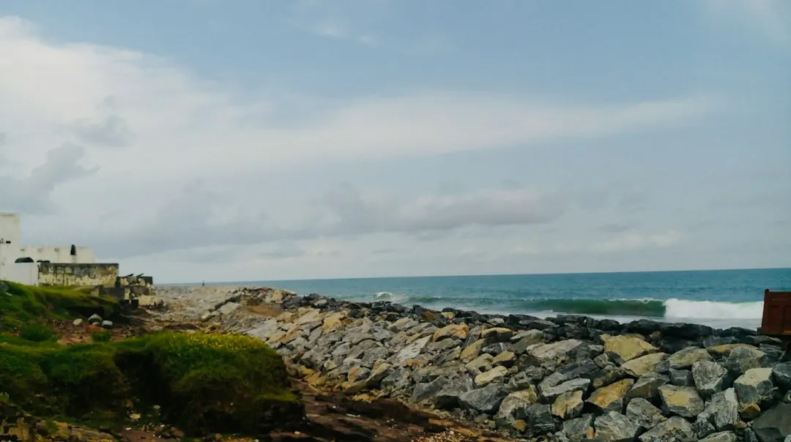

A supplied and installed concrete sleeper wall is listed at about $250 to $650 or more per square metre of wall face in 2026 Australian guides. A one metre high Gold Coast wall is listed at roughly $295 to $590 per lineal metre, with $440 described as typical. Engineering and certification, where required, are listed at roughly $500 to $2,000. The final price also reflects height, access, drainage, footings and engineering.
For homeowners comparing concrete sleeper retaining walls gold coast options, the practical decision comes down to wall height, drainage, site access, approval requirements and whether the existing structure needs replacement.
Concrete Sleeper Retaining Walls Gold Coast Explained
The published guide from Concrete Sleeper Retaining Walls Gold Coast describes these walls as precast concrete sleepers slotted between hot-dip galvanised steel posts, with each post concreted into the ground. That construction is presented for situations including a sloping block, a tired timber wall, a new boundary wall, a garden bed or a level area behind a cut.
Before comparing products, record the approximate wall length and height, what the wall will hold back, whether an old wall is being removed and how machinery could reach the site. The installer should also inspect soil, site access and drainage. A wall carrying extra load above it, such as a driveway, pool or house, may need a more detailed design than a simple garden edge.
- Photograph the existing wall and the ground on both sides.
- Note fences, structures, slopes and likely access points.
- Ask whether the quote includes removal, footings, drainage and finishing.
Read the cost guide correctly
The published 2026 figures are indicative, not a quotation. A supplied and installed wall is placed at around $250 to $650 or more per square metre of wall face, depending on the site and wall height. For a one metre high wall, Gold Coast guides are stated as roughly $295 to $590 per lineal metre installed, with $440 given as a typical figure.
Engineering design and certification are listed at roughly $500 to $2,000 per job where needed. Those figures should be separated from the construction price so a homeowner can see whether the allowance includes design, certification, excavation and disposal. A low wall price may not be comparable with a higher quote if one includes drainage, difficult access or removal of a failing timber structure.
Ask each installer to price the same measured length and height. Request separate lines for sleepers, galvanised posts, concrete footings, excavation, drainage, engineering, certification, old wall removal and any fence work. Also ask what could change the price after the site is inspected.
Drainage and boundary details
Drainage is part of the wall system, not an optional cosmetic extra. The guide describes a slotted agricultural pipe at the base, wrapped in clean gravel and geotextile fabric, with a fall to an approved outlet. The arrangement is intended to manage water behind the wall rather than allowing it to build up against the sleepers.
Boundary walls need attention to drainage and setbacks, especially where a neighbour's land or fence is close by. Some projects place a Colorbond fence above the wall or use concrete sleepers as under-fence plinths. Confirm which party is responsible for the boundary treatment, where water will discharge and whether the fence is included in the quote.
Finishes can change the appearance without changing the basic retaining function. Options described include charcoal, timber-look and sandstone sleepers. Plain grey sleepers can be painted with exterior masonry paint. Ask for the selected finish to appear in the written quote, together with any stated warranty terms.
Approval and construction checks
Retaining walls are regulated building work in Queensland. The published guide states that building work valued over $3,300, including most retaining walls, must be completed by a QBCC-licensed contractor, typically under a structural landscaping or builder licence class. It also states that taller walls or walls carrying extra load may need building approval and an engineer's design.
Where building approval is required, a building certifier issues it before work begins. If engineering is needed, the design must be done or directly supervised by a Registered Professional Engineer of Queensland. These are questions to settle before excavation, rather than assumptions to resolve after posts are installed.
Ask for the proposed wall height, footing approach, drainage outlet, approval pathway and engineering responsibility in writing. The installer should also lodge a free Before You Dig Australia enquiry before post holes are dug, to check for underground pipes and cables.
Choose between repair and replacement
A leaning or rotting treated pine wall may be a replacement project rather than a repair. The guide gives treated pine sleeper walls a typical life of around 15 to 25 years, depending on drainage and soil, while concrete sleepers do not rot. That comparison is useful, but the new design still needs to respond to the actual ground, height and loads at the property.
Concrete block and rock or boulder walls may also be considered when comparing materials. The relevant comparison is not only material price. Consider the required wall height, available access, intended finish, drainage work, boundary position and whether the wall will support a fence or nearby load.
For another perspective on planning a related project, see this companion Gold Coast retaining wall guide. Before accepting a quote, check that the scope identifies who handles approvals, engineering, excavation, drainage and final cleanup.
- Describe the site. Provide the suburb, approximate length and height, what the wall holds back, access conditions and whether an old wall needs removal.
- Confirm the design path. Ask whether the site needs engineering, building approval, a certifier or any specific drainage and setback arrangement.
- Compare written quotes. Check that each quote separately identifies materials, excavation, footings, drainage, certification, removal and fence work where relevant.
| Option or issue | When it may fit | Question to ask |
|---|---|---|
| Concrete sleepers | A sloping block, boundary wall, garden bed or timber replacement | Are height, access, drainage and footings included? |
| Taller or loaded wall | The wall carries extra load or requires a more detailed design | Is engineering and certification required before work begins? |
| Boundary wall with fencing | A wall sits beside a boundary or supports a Colorbond fence | Who handles setbacks, drainage discharge and fence installation? |
Common questions
What does a concrete sleeper retaining wall cost on the Gold Coast? The published 2026 guide gives roughly $295 to $590 per lineal metre installed for a one metre high wall, with $440 described as typical. A broader Australian guide range is around $250 to $650 or more per square metre of wall face.
Why can two quotes for the same wall differ? Price can change with wall height, site access, drainage, footings, engineering and removal of an existing wall. Ask whether both quotes include the same scope.
Does a retaining wall need approval in Queensland? The published guide states that taller walls or walls carrying extra load may need building approval and an engineer's design. A building certifier issues approval where it is required.
What drainage is described for these walls? The guide describes a slotted agricultural pipe at the base, clean gravel, geotextile fabric and a fall to an approved outlet.
What should be checked before digging post holes? The installer should lodge a free Before You Dig Australia enquiry to check for underground pipes and cables before post holes are installed.
This guide covers wall costs, site checks, drainage, approvals, finishes and quote comparisons for Gold Coast properties.